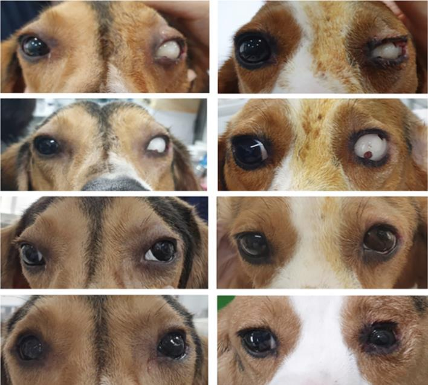

A statement regarding animal experiments by Professor Park Kyung-mi of the Chungbuk University School of Veterinary Medicine, who extracted and euthanized the eyes of a well-heeled beagle for the purpose of < beauty>
Registration Date Author Life Attachment Notice_and_press3_05.jpg {kind=link}
(Photo source Excerpt from the paper of Professor Park Kyung-mi of Chungbuk University School of Veterinary Medicine)
Animal Protection Group Life
For the purpose of promoting the health of animals or humans
Not an inevitable experiment,
Sacrifice of two beagles for the purpose of simple beauty
Conducting unnecessary and unethical experiments
We strongly condemn the research team of Chungbuk University Veterinary Medical University.
▼Related Articles▼
[Korea Daily] [Exclusive] Artificial snow after extraction of the eye of a dog in the distance... "Animal Testing Ethics Thomas Ola"
https://www.hankookilbo.com/News/Read/A2021012100150000820
Animal Protection Group Life
Chungbuk University Veterinary Medical School has been controversial in its research team.
Clearly recognize that it is the result of a lack of bioethics awareness,
To ensure that unnecessary and unethical experiments are never repeated again
Urge them to take measures such as strengthening ethical education.
In addition, the Animal Testing Ethics Committee is properly operated.The welfare and safety of laboratory animals in blind spotsTo ensure that it is properly guaranteed as soon as possibleWe will continue to express our opinions to the relevant institutions and actively cooperate with them.
Since the publication of the paper, a number of researchers have received
1. To reduce the suffering of the animals used in the experiment
Take appropriate action, etc.
Whether international standards for experimental animal ethics have been upheld
2. The method of procedure in which the study is sutured after the existing extraction and
By comparison, whether animals have clinical benfit.
3. Instead of studying clinical cases, use naive animals
I used extraction/transplantation experiments
It has been criticized for its scientific and clinical legitimacy.
The journal PLOSWON is concerned about the paper.
Issued a position expressing concern,
The current paper is an extremely unusual reason.
Ethical Issues in the Animal Testing Process
It is undergoing a re-evaluation by a professional institution.
The research team has faced harsh criticism at home and abroad
Some side effects that can occur when suturing and
I have made excuses such as the applicability of the eye for the human body,
For the research purpose of the paper, 'artificial eyes are aesthetically excellent',
It states that 'the face of a dog with extracted eyes is not beautiful',
The results of the experiment are also announced as 'aesthetically successful'
It makes it clear that it was an experiment for cosmetic purposes.
In the event of a serious illness that requires eye extraction of the dog,
It is common to suture after eye extraction and
The standard treatment is explained by veterinarians.
Some people have artificial eye transplants, but
This can cause pain in the animal after suturing or side effects, etc.
It is not a measure to reduce,
It is being implemented for the aesthetic satisfaction of the viewer.
The research team mainly aimed at simple beauty
Extracting the eyeballs of two healthy beagles
It is undoubtedly clear that a brutal experiment was carried out,
I am deeply sorry for the serious bioethics of the research team.
In addition, Life has that experiment
Approved by the National Animal Testing Ethics Committee
It also expresses strong concern that it has been done legally.
For the welfare of laboratory animals
3R-Principles of Reduction, Replacement, and Refinement
Even the Animal Experiment Ethics Committee and the Research Ethics Committee, which must correctly evaluate the ethics and legitimacy of the
experiment as a grand premise.
The fact that I didn't do my part at all was
In effect, it means that there is no system in place to ensure the safety of laboratory animals in the country.
Researchers have found that in other countries, such as the UK,
It is pointed out that this experiment may not have been approved at all.
With the operation of the formal Animal Testing Ethics Committee
In the meantime, how many unnecessary and
It makes us wonder if unethical experiments have taken place.
Announced by the Agriculture, Forestry and Livestock Quarantine Division
According to the "Survey Results on the Situation of Protective Welfare of Experimental Animals"
In 2019, the number of laboratory animals used in Korea reached 371 million.
That's more than doubled from 144 million in 2010.
This is due to unnecessary experimentation and the consequences of
To reduce the number of experimental animals that suffer
It is a trend that goes against the global trend of trying.
In addition to this, the cochlea of a stray cat
Artificially ruined cochlear implant experiments, or
A fire at the Experimental Animal Center killed 2,500 rabbits, etc.
It is urgent to improve the system for the operation of an effective animal testing ethics committee.
Animal Protection Group Life
Chungbuk University Veterinary Medical School has been controversial due to the research team's lack of bioethics awareness.
Clearly recognize that it is the result of the occurrence
To ensure that unnecessary and unethical experiments are never repeated again
Urge them to take measures such as strengthening ethical education.
In addition, the Animal Testing Ethics Committee is properly operated.
The welfare and safety of laboratory animals in blind spots
To ensure that it is properly guaranteed as soon as possible
We will continue to express our opinions to the relevant institutions and actively cooperate with them.
We will create a world where animals and people coexist.
Animal Protection Group Life